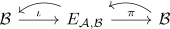
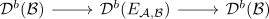

semiorthogonal decomposition of the category of pairs
Proposition
Let $\mathcal{B} \subseteq \mathcal{A}$ be a abelian full subcategory which is closed under subobjects and quotient objects Then for the quasi-abelian category of pairs $E_{\mathcal{A}, \mathcal{B}}$ there exists a sequence

where
- $\iota$ is a right adjoint
- $\pi$ is a left adjoint
In particular it induces a semiorthogonal decomposition

Proof
a)
Consider
\begin{align*}
\iota: \mathcal{B} \rightarrow& E_{\mathcal{A}, \mathcal{B}} \\
b \mapsto& (0 \rightarrow b) \\
\pi: E_{\mathcal{A}, \mathcal{B}) \rightarrow \mathcal{B} \\
(b \rightarrow a) \mapsto& a/b
\end{align*}
and observe that it is an adjoint
b)
\begin{align*}
\mathrm{ev}_0: E_{\mathcal{A},\mathcal{B}} \rightarrow& \mathcal{B}
(b \rightarrow a) \mapsto& b
\tilde{\Delta}: \mathcal{B} \rightarrow E_{\mathcal{A}, \mathcal{B}}
b \mapsto& (b = b)
\end{align*}
and observe that $\tilde{\Delta}$ is the right kan extension.